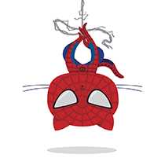
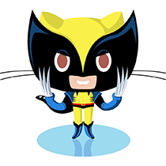
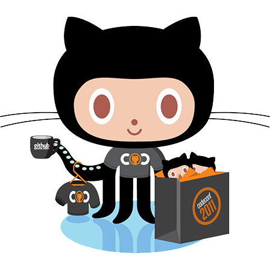

Introduction to Git and Github
by
Prashant Anantharaman
Twitter: @prashantbarca
Email: prashant.@prashant.at
What is git?
Distributed version control system
Why version control?
- Backup system
- Annotated log of changes
- Collaboration tool
Use Case 1 : Backup System
Newton and his dog diamond
Newton writes his research to a file gravity.txt
His smart dog changes it and saves it.
Use Case 2 : Annotated log of changes
Use Case 3 : Collaboration
Any guesses?
Creator!
He coded it in one weekend in 1995!
What else did this guy create?
Installation in gnu/linux
sudo apt-get install git
sudo yum install git
Starting git
cd myresearch
gedit gravity.txt
git init
Initialized empty Git repository in /current/directory/.git/
git status
git add gravity.txt
git commit -m "First commit"
git log
git checkout
git branch
git pull
git push
Feel like a superhero already!
 Create an account on github, show off your work!

Sharpen your skills
The world is watching!
Gain confidence
As the world helps you improve your code!
Opportunities
- Get jobs
- Go to conferences
- and....

THE END
byPrashant Anantharaman
Twitter: @prashantbarca
Email: prashant.@prashant.at